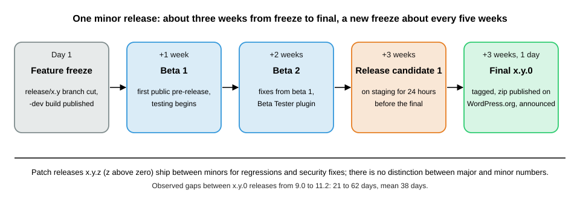
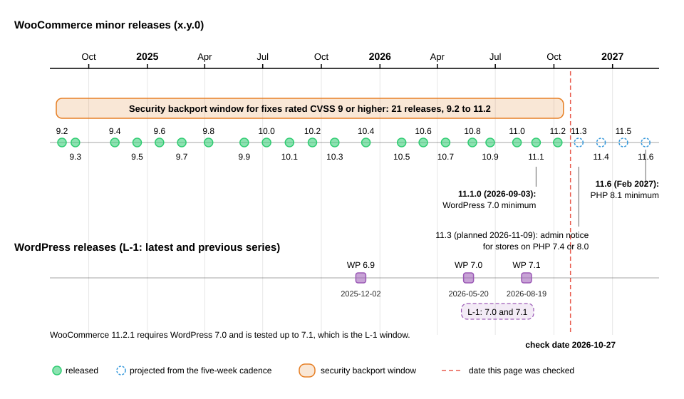
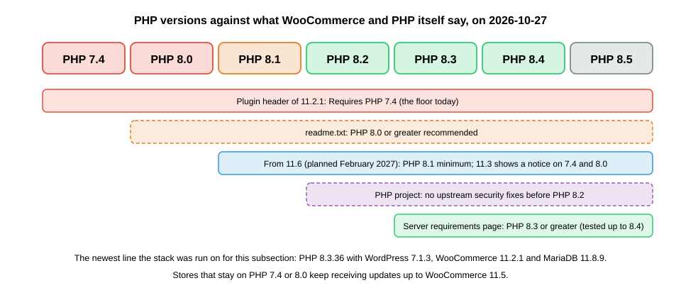

Versions, Requirements and Release Cadence
|
This content was generated with the assistance of AI and should be verified against the official documentation before being relied on in production. |
This page answers three questions before you install anything: which WooCommerce version to run, for how long it will be
patched, and which WordPress, PHP and database versions it needs. It was written against WooCommerce 11.2.1 (published
2026-10-09) on WordPress 7.1.3 (2026-10-06), and checked on 2026-10-27 against the release schedule, the version support
policy and the security patch support policy in the developer documentation, the plugin header and readme.txt of the
11.2.1 release, the merchant server requirements page, the WordPress.org plugin and core APIs and the developer blog. The
next line, 11.3, had its first beta on 2026-10-26 (11.3.0-beta.1) and its final release is planned for the week of
2026-11-09. Every command was run on a local stack with WordPress 7.1.3, WooCommerce 11.2.1, PHP 8.3.36 and MariaDB 11.8.9.
The answers depend on where you look, because three official sources give three different sets of requirements. WooCommerce
11.2.1 declares Requires PHP: 7.4 in its plugin header, its readme.txt recommends PHP 8.0, and the merchant page
recommends PHP 8.3 and still names WooCommerce 10.8. A fourth source, a developer blog post of 2026-09-29, announces that
PHP 8.1 becomes the minimum from WooCommerce 11.6. The sections below explain which statement is enforced by software,
which is advice, and what to run for the running example, Pocket Coffee, a new shop that starts on the newest stable
versions.
The page applies to the WooCommerce plugin from WordPress.org. Extensions from the Woo Marketplace and third-party plugins have their own version numbers and their own support promises; the WooCommerce Overview page lists the ecosystem, and the Extension Development page explains how an extension declares the range it supports.
How versions are numbered
WooCommerce numbers releases x.y.z. The numbering is not semantic versioning, and the first number carries no special
promise: the developer documentation states that WooCommerce makes no distinction between major and minor releases. A change
of x (for example 10.9 to 11.0) is a release like any other that happens to cross a round number: 11.0 removed the block
product editor, but features were also removed or deprecated in releases that did not change x.
| Kind | Example | Meaning |
|---|---|---|
Minor release (the feature release) |
|
The |
Patch (point) release |
|
|
Development build |
|
Built on the day of the feature freeze from the new release branch and published on GitHub, not on WordPress.org. |
Beta |
|
Public pre-release for testing. Published on WordPress.org as a downloadable zip and on GitHub as a pre-release. |
Release candidate |
|
The last pre-release before the final one. A series can have several candidates (11.0.0 had three). |
Final release |
|
The stable release offered to every store as an update. |
Three places show the current version and they should agree. The WordPress.org plugin API reports version 11.2.1, the
GitHub "latest release" is 11.2.1, and the plugin header inside the zip says Version: 11.2.1. One cosmetic inconsistency
is worth knowing: the readme.txt inside the 11.2.1 tag still says Stable tag: 11.2.0, because the stable tag is updated
on the WordPress.org side. Do not use that line to find the latest version.
Bundled components have their own numbers. WooCommerce 11.2.1 ships Action Scheduler 4.1.0 (the 11.2.0 changelog says "Update the Action Scheduler package to version 4.1.0"), although version 4.2.0 exists upstream since 2026-09-16 and is not bundled yet. The command below reads the version of the copy that is actually loaded, which matters because several plugins can bundle Action Scheduler and the newest registered copy wins, as the Action Scheduler page explains.
wp plugin get woocommerce --fields=name,version,status
wp eval 'echo ActionScheduler_Versions::instance()->latest_version(), "\n";'Source: WP-CLI: wp plugin get
The first command printed a table with woocommerce, 11.2.1 and active; the second printed 4.1.0.
The release cycle
WooCommerce releases a new minor version "roughly every five weeks", on a schedule that is public in the release calendar. Each cycle has fixed milestones.

| Milestone | When | What happens |
|---|---|---|
Feature freeze and |
Day 1 |
Automation creates the release branch |
Beta 1 |
+1 week |
Internal regression testing with Woo-maintained extensions in several environments, and the community is invited to test. Fixes are made on the release branch or, preferably, backported from |
Beta 2 |
+1 week |
Regression fixes found in beta 1, and the pre-release post is updated. |
Release candidate 1 |
+1 week |
The last round of internal checks. A fix found now is merged into the release branch as before. |
Final release |
+1 day |
The stable release becomes available to everyone. The build waits until the candidate has been on a staging site for at least 24 hours, and release highlights are published. |
Patch releases |
as needed |
Versioned |
Dates can move. The documentation says a delay is communicated and the calendar updated, and it happened: the 11.1 release was announced as delayed on 2026-09-01 and shipped on 2026-09-03. The observed dates of the minor releases since 10.0 show how close to five weeks the cadence is in practice.
| Release | Date | Days since the previous minor release |
|---|---|---|
10.0.0 |
2025-07-07 |
35 |
10.1.0 |
2025-08-12 |
36 |
10.2.0 |
2025-09-17 |
36 |
10.3.0 |
2025-10-22 |
35 |
10.4.0 |
2025-12-10 |
49 |
10.5.0 |
2026-02-04 |
56 |
10.6.0 |
2026-03-10 |
34 |
10.7.0 |
2026-04-14 |
35 |
10.8.0 |
2026-05-26 |
42 |
10.9.0 |
2026-06-23 |
28 |
11.0.0 |
2026-08-04 |
42 |
11.1.0 |
2026-09-03 |
30 |
11.2.0 |
2026-10-07 |
34 |
From 9.0.0 (2024-06-18) to 11.2.0 the gaps range from 21 to 62 days with a mean of 38 days, about five and a half weeks, so "every five weeks" is the target and the holiday periods stretch it. The command below lists the most recent releases straight from the changelog that ships with the project.
curl -s https://raw.githubusercontent.com/woocommerce/woocommerce/trunk/changelog.txt | grep -E "^= 11\.[0-9]+\.[0-9]+ " | head -8It printed seven lines, newest first: 11.2.1 2026-10-09, 11.2.0 2026-10-07, 11.1.2 2026-09-22, 11.1.1 2026-09-18,
11.1.0 2026-09-03, 11.0.1 2026-08-10 and 11.0.0 2026-08-04. The WordPress.org API lists every published version,
including the pre-releases; for the 11 series it holds 11.0.0-beta.1, -beta.2, -rc.1 to -rc.3, 11.0.0, 11.0.1, the
11.1 and 11.2 families and 11.3.0-beta.1.

Security releases
A release can be a security release. 11.2.0 (2026-10-07) was one: the developer blog advises updating every store to 11.2 and lists fixes such as recipients on password-reset-type emails, authorisation of downloads and a multisite admin issue. The Performance and Security page lists the incident history.
The July 2021 incident shows the mechanism at its widest. After a critical SQL injection in the WooCommerce Blocks code (CVE-2021-32789) and a second flaw in core from 3.3.0 (CVE-2021-32790), patched releases were produced for more than 90 versions and pushed to vulnerable stores through WordPress.org on 2021-07-14, ending with 5.5.2 on 2021-07-23.
Following a release
Beta and candidate builds are for test stores. The WooCommerce Beta Tester plugin switches a test store to a pre-release
channel, and any version, including pre-releases, can be installed with WP-CLI (wp plugin install woocommerce --version=11.3.0-beta.1). That install was not run here on the shared test site, so the 11.3 behaviour on this page comes
from the developer blog and the zip header, which still reads Requires at least: 7.0 and Requires PHP: 7.4.
The Installation and Local Environments page covers
test stores.
Support policy: L-1
WooCommerce documents which versions of WordPress and WooCommerce it supports with the L-1 policy: the latest release
series and the immediately previous one, counted as x.y series, only the latest patch release of each series, and
pre-releases do not move the window. Its practical effects are below.
| Product | Support promise |
|---|---|
WooCommerce core |
Supports the latest and the previous WordPress series. Today WordPress 7.1 is the latest and 7.0 the previous one, which is why the 11.2.1 header says |
Extensions developed by Woo |
Support L-1 of both WordPress and WooCommerce: the latest and previous series of each. |
Third-party extensions |
Their authors choose their own range. The Woo Marketplace asks submissions to support the two latest major versions of WordPress and WooCommerce, see the Testing, Deployment and Marketplace page. |
The policy defines how plugin headers map to the window. WordPress reads the standard keys; WC requires at least and
WC tested up to are WooCommerce conventions that WordPress itself ignores.
| Header key | Meaning | Read by |
|---|---|---|
|
Earliest WordPress series the plugin supports. |
WordPress (it refuses to activate the plugin below it). |
|
Earliest PHP version the plugin supports. |
WordPress (same behaviour). |
|
Slugs of plugins that must be active first, for example |
WordPress. |
|
Latest WordPress version the author tested. |
WordPress.org for its compatibility display (in |
|
Earliest WooCommerce version the extension supports. |
WooCommerce tooling and the Marketplace, by convention. |
|
Latest WooCommerce version the author tested. |
WooCommerce tooling and the Marketplace, by convention. |
The code below starts the extension of the running example (the rest of the file follows in the next section). Its header is a complete L-1 declaration for a plugin written on 2026-10-27, and its functions check the running version in code. A header only describes a range; to behave well outside it, the plugin must also test the version itself, because WooCommerce can be updated independently of the extension.
<?php
/**
* Plugin Name: Pocket Coffee Versions
* Description: Reports the platform versions Pocket Coffee runs on and checks them against the WooCommerce support policy.
* Version: 0.1.0
* Requires at least: 7.0
* Requires PHP: 7.4
* Requires Plugins: woocommerce
* WC requires at least: 10.8
* WC tested up to: 11.2
* License: GPL-2.0-or-later
* Text Domain: pocket-coffee-versions
*
* @package PocketCoffeeVersions
*/
defined( 'ABSPATH' ) || exit;
/**
* Versions in play on this site.
*
* @return array<string,string>
*/
function pocket_coffee_versions_report() {
global $wpdb, $wp_version;
return array(
'wordpress' => $wp_version,
'woocommerce' => defined( 'WC_VERSION' ) ? WC_VERSION : 'not loaded',
'php' => PHP_VERSION,
'database' => $wpdb->db_server_info(),
// PHP 8.1 becomes the WooCommerce minimum in 11.6.
'php_ready_for_woo_11_6' => version_compare( PHP_VERSION, '8.1', '>=' ) ? 'yes' : 'no',
);
}
/**
* Is this WooCommerce version one the extension supports?
*
* @param string|null $wc_version Version to test; defaults to the running one.
* @param string $minimum Oldest supported version, the "WC requires at least" value.
* @return bool
*/
function pocket_coffee_versions_woocommerce_supported( $wc_version = null, $minimum = '10.8' ) {
if ( null === $wc_version ) {
$wc_version = defined( 'WC_VERSION' ) ? WC_VERSION : '0';
}
return version_compare( $wc_version, $minimum, '>=' );
}The functions are plain PHP and the checks, run with wp eval, behave as written. The check for WooCommerce 10.7.0 returns
false, and both 11.2.1 and the running version return true. version_compare() understands the -beta.1 and -rc.1 suffixes and orders
them before the final release, which matters when a test store runs a pre-release.
wp plugin activate pocket-coffee-versions
wp pocket-coffee versions
wp eval 'var_dump( pocket_coffee_versions_woocommerce_supported( "10.7.0" ), pocket_coffee_versions_woocommerce_supported( "11.2.1" ) );'Source: WP-CLI: wp plugin activate
The output was Plugin 'pocket-coffee-versions' activated., then the five-line report below, and then bool(false) and
bool(true).
wordpress 7.1.3 woocommerce 11.2.1 php 8.3.36 database 11.8.9-MariaDB-ubu2404 php_ready_for_woo_11_6 yes
WordPress enforces Requires at least and Requires PHP when a plugin is activated. A throw-away plugin whose header
said Requires at least: 99.0 and Requires PHP: 9.9 could not be activated: WP-CLI printed "Failed to activate plugin"
with the message that the current versions of WordPress (7.1.3) and PHP (8.3.36) do not meet the minimum requirements and
that the plugin requires WordPress 99.0 and PHP 9.9, ended with Error: No plugins activated. and exit status 1, and the
plugin stayed inactive. The same check hides plugin updates that need a newer PHP than the site has, which becomes
important at WooCommerce 11.6.
Security backport window
Fixes land in the latest release first. For vulnerabilities rated CVSS 9 or higher, the security patch support policy goes
further: "WooCommerce will provide security patches for the last 21 major versions", where major version means the x.y
number (10.8, 10.9, 11.0). With the current stable at 11.2, that is 9.2 and newer. For anything below CVSS 9 the policy
publishes the fix for the latest version only.
| Current stable series | Oldest series covered | Remark |
|---|---|---|
11.2 (today) |
9.2 |
9.2.0 was released on 2024-08-20, about two years and two months before the check date. |
11.3 (planned for the week of 2026-11-09) |
9.3 |
The floor moves up by one with every new series, because an automated workflow bumps the number on the policy page after each stable release. |
11.6 (planned for February 2027) |
9.6 |
The window then starts at the release of 2025-01-20. |
Four details are easy to miss.
-
The window counts series, not time. At the current cadence 21 releases are "roughly two years", but a slower stretch shrinks the time coverage and a faster one extends it.
-
The patch ships as a point release. A store on 9.5 receives 9.5.x with the fix, not a jump to 11.2. Older stores must update to reach a supported series, and the policy says plainly that versions older than the window get no security patches.
-
The CVSS 9 threshold is a floor, not a ceiling. The policy allows courtesy backports outside it, and the record shows it being applied below 9: CVE-2025-15033 (CVSS 6.5, customers could read guest orders) was fixed in 10.4.3 "and all previously affected versions through point releases" from 8.1.3 onwards, per the National Vulnerability Database text.
-
Reports go private. Vulnerabilities are reported through Automattic’s HackerOne programme, never in public issues.
The wp pocket-coffee support-window command in the extension turns the policy into code. It asks the WordPress.org API for
every published version, keeps the stable ones, collapses them to x.y series, sorts them with version_compare() and
takes the oldest of the last 21.
/**
* Oldest release series covered by the CVSS 9 security backport window.
*
* @param string[] $versions All published versions, such as 11.2.1 or 11.3.0-beta.1.
* @param int $window Number of x.y series the policy covers.
* @return string|null Series such as 9.2, or null when there are no stable versions.
*/
function pocket_coffee_versions_support_floor( array $versions, $window = 21 ) {
$series = array();
foreach ( $versions as $version ) {
// Stable releases only: betas and release candidates carry a suffix.
if ( preg_match( '/^(\d+\.\d+)\.\d+$/', $version, $matches ) ) {
$series[ $matches[1] ] = true;
}
}
$series = array_keys( $series );
usort( $series, 'version_compare' );
$covered = array_slice( $series, -$window );
return $covered ? $covered[0] : null;
}
if ( defined( 'WP_CLI' ) && WP_CLI ) {
WP_CLI::add_command(
'pocket-coffee versions',
function () {
foreach ( pocket_coffee_versions_report() as $key => $value ) {
WP_CLI::line( sprintf( '%-24s %s', $key, $value ) );
}
}
);
WP_CLI::add_command(
'pocket-coffee support-window',
function () {
require_once ABSPATH . 'wp-admin/includes/plugin-install.php';
$info = plugins_api(
'plugin_information',
array(
'slug' => 'woocommerce',
'fields' => array( 'versions' => true ),
)
);
if ( is_wp_error( $info ) ) {
WP_CLI::error( $info->get_error_message() );
}
$floor = pocket_coffee_versions_support_floor( array_keys( (array) $info->versions ) );
WP_CLI::line( sprintf( 'latest stable %s', $info->version ) );
WP_CLI::line( sprintf( 'requires WordPress %s (tested up to %s)', $info->requires, $info->tested ) );
WP_CLI::line( sprintf( 'requires PHP %s', $info->requires_php ) );
WP_CLI::line( sprintf( 'backport floor %s', $floor ) );
WP_CLI::line( sprintf( 'installed %s', pocket_coffee_versions_report()['woocommerce'] ) );
}
);
}Source: WP-CLI: WP_CLI::add_command
Running wp pocket-coffee support-window on the test site printed the following. The API reports Tested up to as the exact
WordPress version 7.1.3, while the readme.txt inside the plugin zip says 7.1.
latest stable 11.2.1 requires WordPress 7.0 (tested up to 7.1.3) requires PHP 7.4 backport floor 9.2 installed 11.2.1
A test of the floor function alone, with the list 11.3.0-beta.1, 11.2.1, 11.2.0, 11.1.0, 11.0.0 and 10.9.0 and a
window of three, returned 11.0, which shows that the beta is ignored and the three newest stable series are 11.2, 11.1
and 11.0. The extension passed phpcs with the WooCommerce Core, WordPress Extra and WordPress Docs standards with no
findings, and with the PHPCompatibilityWP ruleset for PHP 7.4 and later and for PHP 8.1 and later.
Requirements
The versions WooCommerce needs are stated in four places, and they disagree. The table lists what each says on 2026-10-27.
| Source | WordPress | PHP | Database |
|---|---|---|---|
Plugin header of 11.2.1 ( |
7.0 |
7.4 |
not in the header |
|
7.0 |
7.4 (8.0 recommended) |
MySQL 5.5.5 or MariaDB 10.1 |
woocommerce.com "Server Recommendations" ("10.8 and later") |
6.9 |
8.3 (7.4 is the legacy minimum) |
MySQL 8.0 or MariaDB 10.6 (MySQL 5.6 or MariaDB 10.4 legacy) |
WordPress.org requirements page (recommended, for WordPress itself) |
not applicable |
8.3 |
MariaDB 10.11 or MySQL 8.0 |
WooCommerce developer blog, 2026-09-29 |
not applicable |
8.1 minimum from 11.6 (Feb 2027), 8.3 recommended |
not applicable |
Sources: plugin header of 11.2.1, readme of 11.2.1, WooCommerce server requirements and WordPress requirements
How to read the disagreement.
-
The header is the enforced minimum. WordPress itself blocks activation and updates below
Requires at leastandRequires PHP, so 7.0 and 7.4 are what the software accepts today. WordPress core 7.1.3 itself requires only PHP 7.4 and MySQL 5.5.5 (the version-check API returns those values for 7.1.3 and 7.0.7). -
The merchant page is advice, and it is stale. It says it covers "WooCommerce 10.8 and later" and still recommends WordPress 6.9, which WooCommerce 11.1.0 (2026-09-03) replaced as the minimum by 7.0. Its PHP 8.3 and MySQL 8.0 or MariaDB 10.6 numbers are the best guidance for a new store because they are what the project tests against: the page says "tested up to PHP 8.4".
-
The readme database numbers are very old. MySQL 5.5.5 and MariaDB 10.1 are the WordPress-core floor and are long past support, and the readme repeats them. Choose a database by the merchant page and by what your host supports.
-
PHP 7.4 is on borrowed time. The 11.6 minimum of 8.1 is planned, and PHP itself stopped giving upstream security fixes to anything before 8.2 (see below).

WordPress
WooCommerce 11.1.0 raised Requires at least from 6.9 to 7.0 (the changelog line is "Update version requirements to
WordPress 7.0"), and the 11.1.0-beta.1 header still said 6.9: the change arrived with beta 2. The earlier minimums were 6.9
from 10.8.0 and 6.8 for 10.6.0 and 10.7.0. The WordPress releases involved are 6.9 (2025-12-02, the 6.9.10 branch is still
maintained), 7.0 (2026-05-20, 7.0.7 maintained) and 7.1 (2026-08-19, the latest is 7.1.3 from 2026-10-06). The WordPress.org
version-check API shows that both the 7.1 and the 7.0 branches still receive automatic updates.
curl -s "https://api.wordpress.org/core/version-check/1.7/" | python3 -c "import json,sys; [print(o['response'], o['version'], o['php_version'], o['mysql_version']) for o in json.load(sys.stdin)['offers']]"Source: WordPress.org: Releases
It printed upgrade 7.1.3 7.4 5.5.5, autoupdate 7.1.3 7.4 5.5.5 and autoupdate 7.0.7 7.4 5.5.5: the versions an up-to-date
site is offered, and the PHP and MySQL minimums of WordPress core.
PHP
The plugin header declares Requires PHP: 7.4, the same floor as WordPress core, and nothing in WordPress itself prevents
PHP 7.4 or 8.0 today. Three facts change that for any store.
-
WooCommerce 11.3 warns. The 11.3 line adds a dismissible admin notice for stores on PHP 7.4 or 8.0. Stores keep working and keep receiving updates.
-
WooCommerce 11.6 requires PHP 8.1. The change is planned for February 2027, and stores on PHP 7.4 or 8.0 can keep updating up to 11.5. When the header changes, WordPress stops offering the update to a site whose PHP is older.
-
PHP 8.1 already has no upstream fixes. After a critical PHP security release announced on 2026-10-21, WooCommerce noted that no WooCommerce update was planned and that PHP versions before 8.2 receive no upstream security fixes; an 11.3 change warns stores on PHP below 8.1 about it. The practical target is therefore PHP 8.3 or later, the recommendation of the merchant page, with 8.4 the highest version it lists as tested.
To see where a site stands, the extension’s report command prints php_ready_for_woo_11_6, yes here because the test
site runs PHP 8.3.36. The PHPCompatibilityWP ruleset checks code against a PHP range: the extension passes it for 7.4 and
later and for 8.1 and later, which is how an extension author checks a plugin before the 11.6 header change. The
PHP section covers language features that differ between 7.4 and 8.x.
Database
WooCommerce works on MySQL and MariaDB, as WordPress does. The test stack used MariaDB 11.8.9 (image mariadb:11.8); the
Docker Hub tags mariadb:11.4, mariadb:10.11 and mysql:8.4 are the other candidates for local work. The merchant page
also lists optional global SQL modes (ERROR_FOR_DIVISION_BY_ZERO, NO_ENGINE_SUBSTITUTION, NO_ZERO_DATE,
NO_ZERO_IN_DATE, STRICT_ALL_TABLES) and recommends 256 MB for the WordPress memory limit and HTTPS. The commands below
show those values on the test stack.
wp eval 'global $wpdb; echo $wpdb->db_server_info(), "\n", $wpdb->get_var( "SELECT @@sql_mode" ), "\n";'
wp eval 'echo WP_MEMORY_LIMIT, " ", WP_MAX_MEMORY_LIMIT, " ", is_ssl() ? "https" : "http", "\n";'Source: WooCommerce: Server requirements
The first printed 11.8.9-MariaDB-ubu2404 and the global mode ERROR_FOR_DIVISION_BY_ZERO,NO_AUTO_CREATE_USER,NO_ENGINE_SUBSTITUTION
(the image’s default, without the strict modes the page lists as optional); the second printed 40M 256M http, because the
test site is a local HTTP site. A production store must use HTTPS: the Store API cookies, the REST API keys over Basic
authentication and payment gateways all assume it.
Other requirements
The merchant page lists optional PHP extensions (cURL or fsockopen, SOAP, mbstring) and a working permalink
structure. Block-based features need nothing on the server beyond WordPress, but build tools for custom blocks need Node.js
on the developer machine; the tool versions current on 2026-10-27 are @wordpress/env 12.0.0, @wordpress/scripts 37.0.0
and @woocommerce/create-woo-extension 2.1.0. WordPress Studio is the local environment WooCommerce recommends, and the
deprecated @wp-now/wp-now has been replaced by @wp-playground/cli.
Choosing versions
| Decision | Recommendation on 2026-10-27 | Why |
|---|---|---|
WooCommerce |
The latest stable, 11.2.1, on a store you can update every few weeks. |
Only the latest series gets regular fixes. Series up to 21 releases back receive fixes only for CVSS 9 or higher. |
WordPress |
7.1.3, or 7.0.x if a plugin you depend on is not compatible yet. |
That is the L-1 window. Staying below 7.0 is not possible with WooCommerce 11.1 or later. |
PHP |
8.3, or 8.4 if your hosting and extensions allow it. |
8.3 is the merchant recommendation and 8.4 the highest it lists as tested; 8.1 becomes the minimum in 11.6. |
Database |
MariaDB 10.11 to 11.8 or MySQL 8.0 and later, with HTTPS in front. |
The merchant page lists MySQL 8.0 and MariaDB 10.6 as the floor, and WordPress.org recommends MariaDB 10.11 or MySQL 8.0. |
Updates |
Test every minor release on a staging site (beta and candidate builds before the final if the shop has custom code), and apply patch releases promptly. |
Security releases such as 11.2.0 expect every store to update. |
Pocket Coffee is a new shop, so it starts on WordPress 7.1.3, WooCommerce 11.2.1, PHP 8.3 and MariaDB 11.8, and its
extension declares Requires at least: 7.0, Requires PHP: 7.4, WC requires at least: 10.8 and WC tested up to: 11.2.
A short version history
The table lists the releases that the rest of the subsection refers to. Dates come from the project changelog.
| Release | Date | Change |
|---|---|---|
8.2.0 |
2023-10-13 |
High-Performance Order Storage becomes stable and the default for new installs. |
8.3.0 |
2023-11-16 |
Cart and Checkout blocks become the default for new installs. |
9.0.0 |
2024-06-18 |
The Legacy REST API is removed from core (it lives in a separate plugin). |
9.9.0 |
2025-06-02 |
In-context WooPayments onboarding. |
10.3.0 |
2025-10-22 |
MCP Adapter and the Abilities API integration appear. |
10.4.0 |
2025-12-10 |
The Interactivity API Mini-Cart becomes the default. |
10.8.0 |
2026-05-26 |
WordPress 6.9 becomes the minimum; the experimental Dual API is introduced. |
10.9.0 |
2026-06-23 |
The block product editor is deprecated. |
11.0.0 |
2026-08-04 |
The block product editor is removed; product object caching is on for new stores; Action Scheduler 4.0.0. |
11.1.0 |
2026-09-03 |
WordPress 7.0 becomes the minimum; retired feature flags get compatibility shims. |
11.2.0 |
2026-10-07 |
The |
11.3.0-beta.1 |
2026-10-26 |
Beta: the old |
Legacy requirements in older material
The books on WooCommerce cover versions 2.2 to 3.x with WordPress 4.x and PHP 5, with XAMPP or MAMP local stacks and the WooThemes name and addresses. None of that runs on current software: WordPress 7.0 and PHP 7.4 are the lowest accepted versions, orders no longer live in posts by default, and the setup wizard of those years was replaced by a new onboarding flow. When a recipe in a book mentions a PHP or WordPress requirement, read it as history. The Store Setup and Launch page rewrites the useful parts of those recipes for the current version.
What could not be run
The browser-based setup, WooPayments, paid Marketplace extensions and QIT need accounts and were not run, as the
Overview states. The 11.3 beta was not installed on the shared test site: its zip
header and the developer blog are the sources for its behaviour. The readme.txt figures, the merchant page and the
developer blog were read from the official sites on the check date, and the merchant page is the one most likely to change
first.